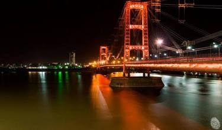
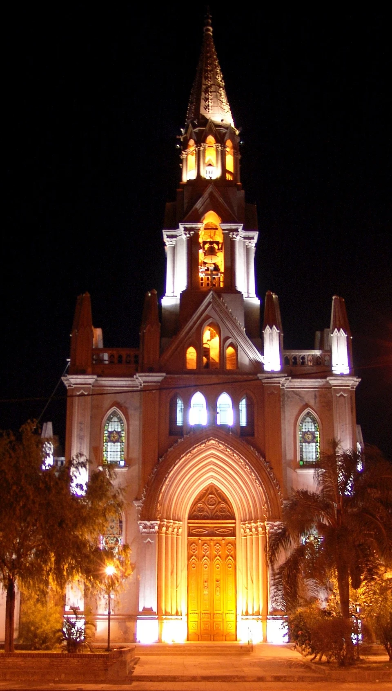
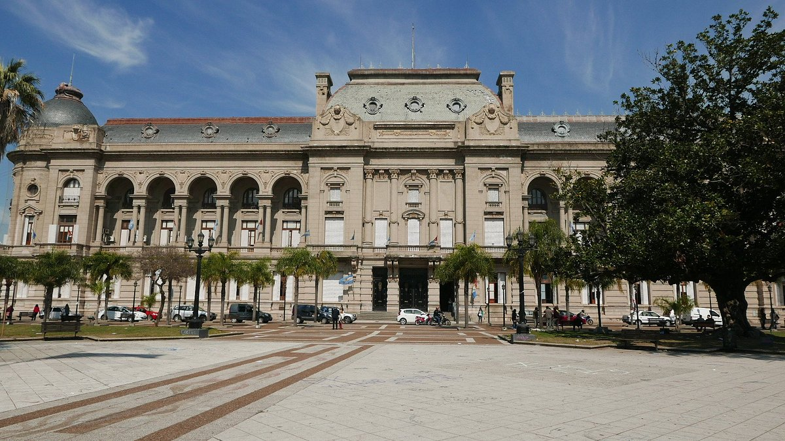
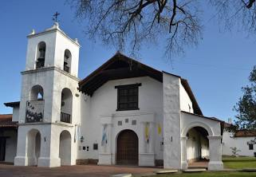
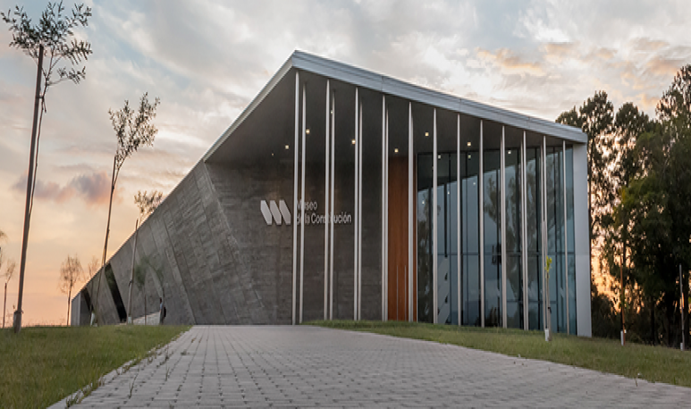

Turismo
Santa Fe combina historia colonial en su casco histórico con la belleza de su Costanera sobre la Laguna Setúbal. Cuna de la Constitución, invita a disfrutar de paseos náuticos, cultura litoraleña y su tradicional "liso".

Puente Colgante de Santa Fe
Inaugurado en 1924, es el símbolo arquitectónico más reconocido de la ciudad. Su estructura
metálica y su vista panorámica sobre la Laguna Setúbal lo convierten en un atractivo turístico y
cultural imperdible para quienes visitan la región.
Localización: Costanera Este, sobre la Laguna Setúbal, conectando ambas costaneras en la ciudad de Santa Fe, Argentina.

Basílica Nuestra Señora de Guadalupe
Es un pilar fundamental de la fe y la cultura de la región santafesina. Cada año congrega a decenas de miles de peregrinos en su tradicional festividad, destacando por su imponente arquitectura neogótica y su gran valor histórico patrimonial.
Localización: Calle Javier de la Rosa 600, barrio de Guadalupe, en la zona norte de la ciudad de Santa Fe, Argentina.

Casco Histórico de Santa Fe
El Casco Histórico es el corazón patrimonial de la capital santafesina, ideal para recorrer a
pie y descubrir la esencia de la ciudad. Allí se destacan la Plaza 25 de Mayo, la Catedral
Metropolitana, el Cabildo histórico y el Convento de San Francisco, junto a museos históricos relevantes.
Localización: Centro del sur de la ciudad de Santa Fe, con epicentro en la Plaza 25 de Mayo y sus alrededores.

Convento e Iglesia de San Francisco
El Convento de San Francisco es uno de los monumentos históricos más antiguos de la ciudad y del
país. Su arquitectura colonial y su valor religioso lo convierten en un sitio imperdible para
quienes visitan Santa Fe. Dentro podés recorrer la iglesia y admirar sus retablos antiguos.
Localización: Calle San Martín al 1500, pleno Casco Histórico de la ciudad de Santa Fe, a pocos metros de la Plaza 25 de Mayo.

Museo de la Constitución Nacional
Inaugurado en 2018, este museo moderno celebra la historia de la Constitución Argentina de 1853,
redactada en Santa Fe. Es un espacio interactivo y cultural donde podés recorrer salas
audiovisuales, exposiciones históricas y actividades educativas que muestran la identidad democrática.
Localización: Parque de la Constitución, Avenida Circunvalación, al sur de la ciudad de Santa Fe.